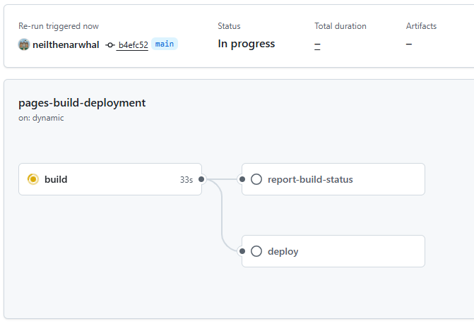
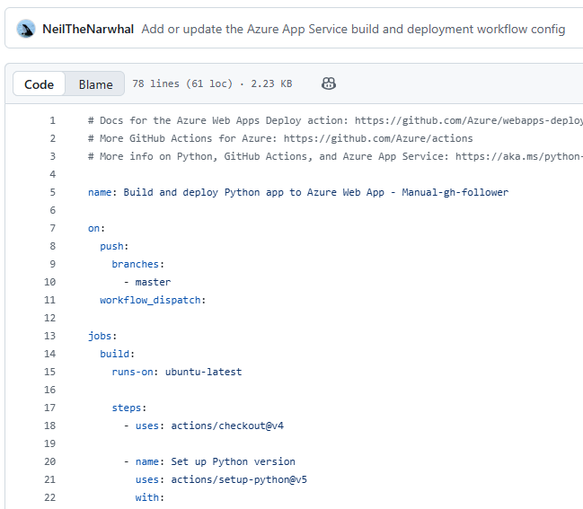
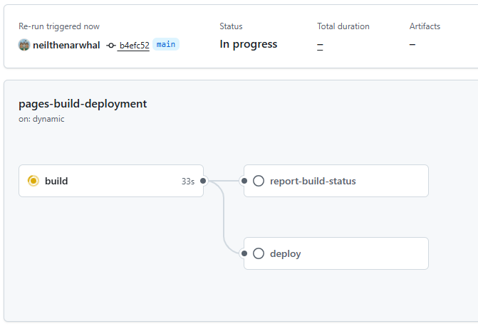
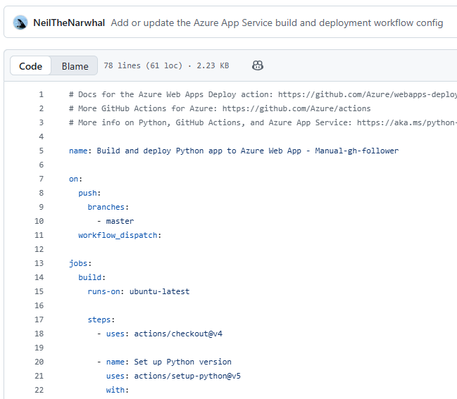

GitHub Actions is basically your repo’s personal robot butler.
It builds your project, runs tests, deploys your site, cleans up your mess,
and never complains — unlike actual humans.
⚡ What GitHub Actions Can Do
Build + test your code automatically
Deploy websites on push
Run scripts on a schedule
Lint your project
Check formatting, run security scans, etc.
✅ Actions run inside YAML files inside .github/workflows/
📚 Basic Workflow Example
Output will appear here...
📚 Scheduled Workflows (CRON)
⏰ CRON = "do this automatically without me touching anything"
 


